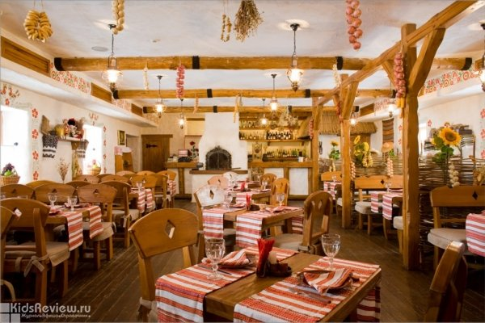
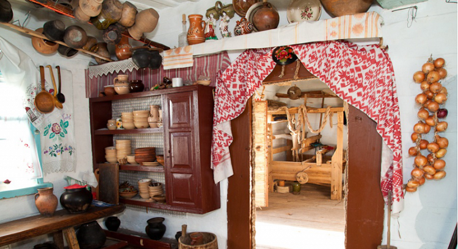
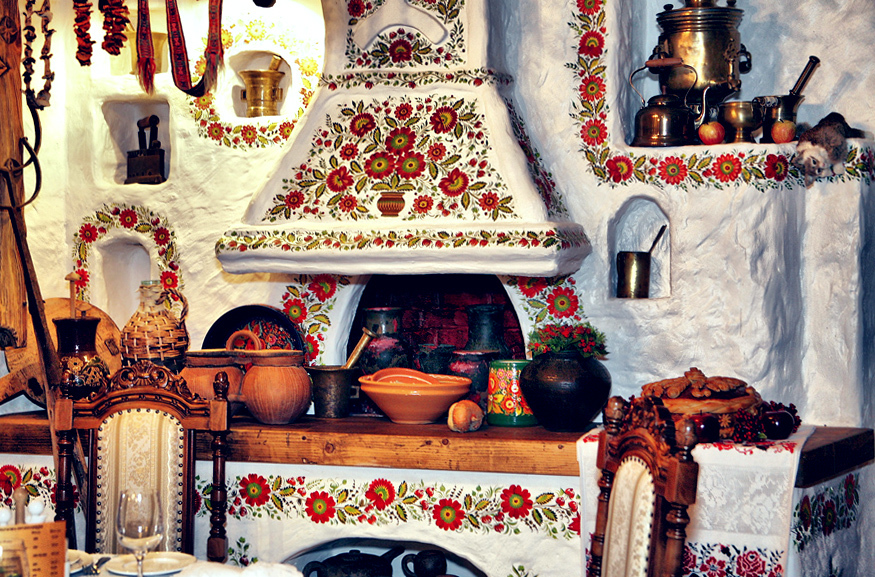
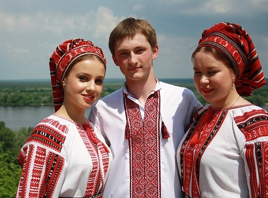
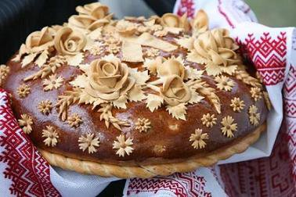
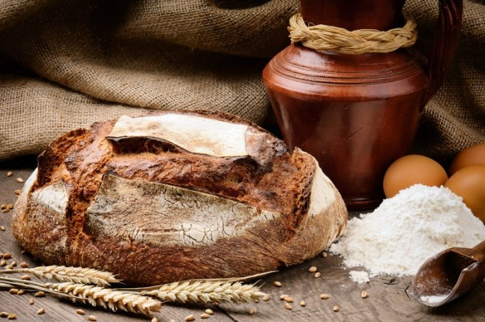
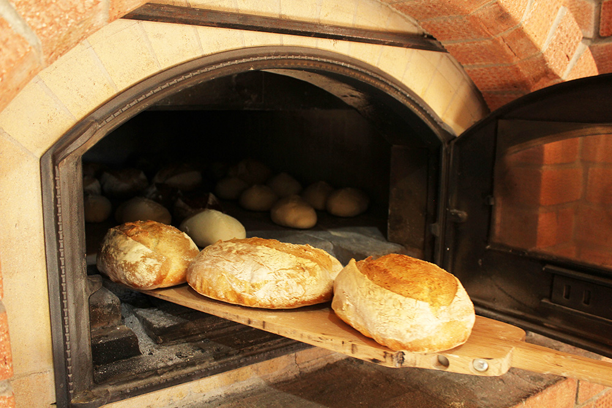
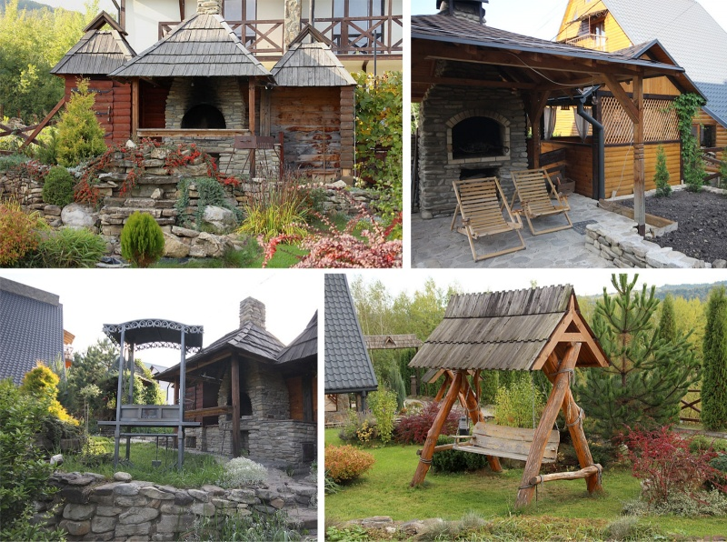

Весь заклад дихає колоритом гуцульського інтер'єру 16 століття. Ви зануритесь у світ невеличкого старовинного села. В інтер'єрі колиби використані предмети народного побуту. У «Хуторку» як в бабусиній скрині, зібрана ціла колекція вручну вишитих рушників і строкатих орнаментованих хусток. Особливий затишок створю.nm стіни, прикрашені петриківським розписом, і старовинні сільські атрибути, привезені з усіх усюд: дерев'яні прядки, глечики та пузаті пляшки для домашньої "самогонки", глиняні глечики, ступи і лампадки, яким вже дуже - дуже багато років. На столах скатертини з вишивкою і унікальний керамічний посуд виготовлений косовськими майстрами.
  Також порадують ваше око офіціанти та бармени одягнені в національні гуцульські костюми і взуття.
Кожна подія в житті українця знаменується фольклором та піснею. Чи то весілля, чи то хрестини, чи то інше родинне свято — всюди виконуються пісні, використовуються народні звичаї та прикмети. Тому у нашому закладі завжди лунають традиційні пісні, відомі усім з самого дитинства.. Веселі та радісні мотиви українських пісень роблять атмосферу ресторану більш домашньою, а звуки гармоні і баяна поманять Вас пуститися в танок.
А гурмани знайдуть українські страви, приготовані за автентичними рецептами. Тут подаються традиційні страви, починаючи з задимлених, з пилу, з жару вареників, великого асортименту національних м’ясних страв та духмяного хлібу! Особливістю нашого закладу є використання фруктів, овочів та м’яса худоби, які вирощені в місцевих сільських господарствах. Саме тут ви дізнаєтеся смак справжньої бринзи, сиру з козячого та овечого молока , виготовлених за закарпатськими старовинними рецептами.
Але найбільшою гордістю є наша власна хлібопекарня. Як каже народна мудрість: «Хліб - усьому голова» , та є символом сили та достатку. Хліб спрадавна має велике значення для українців. Жодне свято та подія у житті нашого народу не проходить без духмяної випічки, розкішного короваю або смачненьких калачів. Тож, відвідавши нашу колибу ви зможете скуштувати свіжу, запашну, смаковиту та рум’яну випічку, виготовлену за старовинними рецептами, тільки-но з справжньої старовинної гуцульської печі. Ця піч - це душа нашої пекарні, колиска історії. Також у певні дні ми проводимо майстер-класи з випікання хлібу, щоб і ви спробували випікати хліб так, як це робили наші пращури багато років тому.
  Також поряд з нами розмістився невеликий зоопарк, який стане приємним сюрпризом як для самих маленьких відвідувачів музею під відкритим небом, так і для дорослих. Тут живуть українські домашні тварини і птахи - вівці, поросята, кролики, нутрії, курочки і півники. Всіх їх можна погодувати, купивши спеціальний корм в сувенірній крамниці. У цій же крамниці можна купити пам'ятний сувенір.
Чудова архітектура, колоритний стиль, гарне обслуговування і смачна кухня робить колибу «Хуторок» найкращим місцем для сімейних застіль, дружніх зустрічей і звичайно ж для любителів просто смачно, якщо треба, то по - швидкому поїсти з української щедрістю, дружній привітністю і з дуже смачними стравами. Наші співробітники допоможуть Вам організувати не тільки харчування, але і культурну програму у нашому закладі з українським колоритом та привітністю.
Відвідавши "Хуторок" Ви відчуєте, ніби прийшли в гості до гостинної української сім'ї, де завжди раді бачити нових і старих друзів.